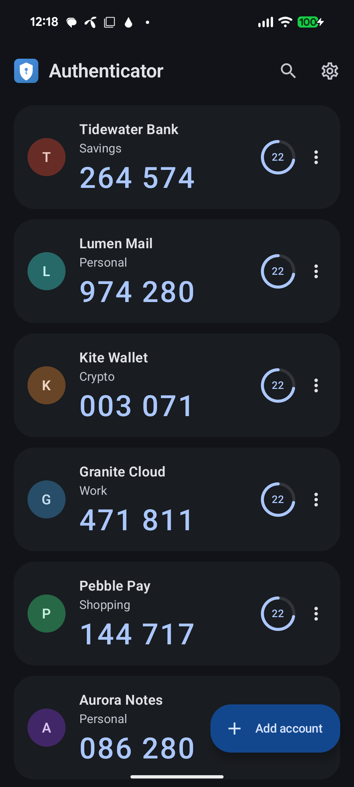
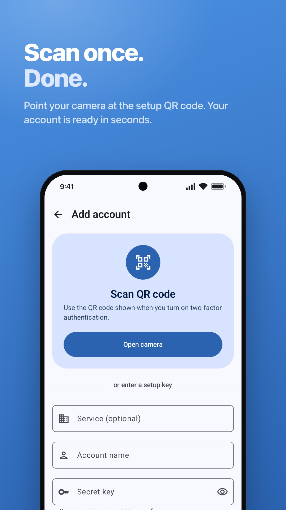
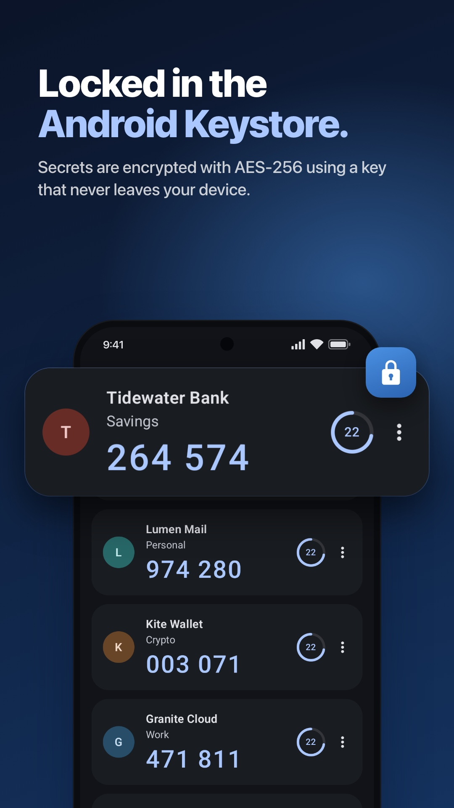
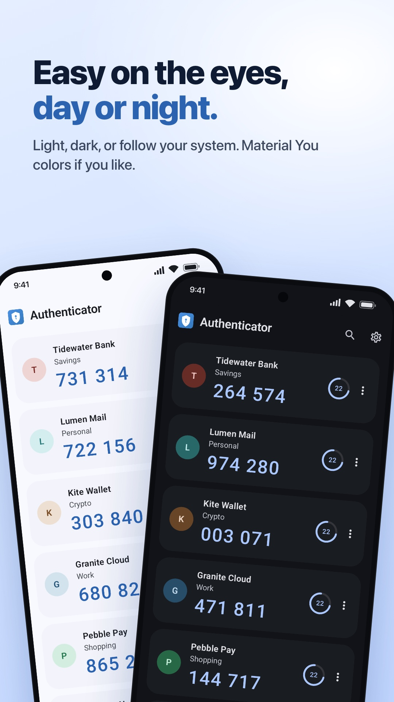
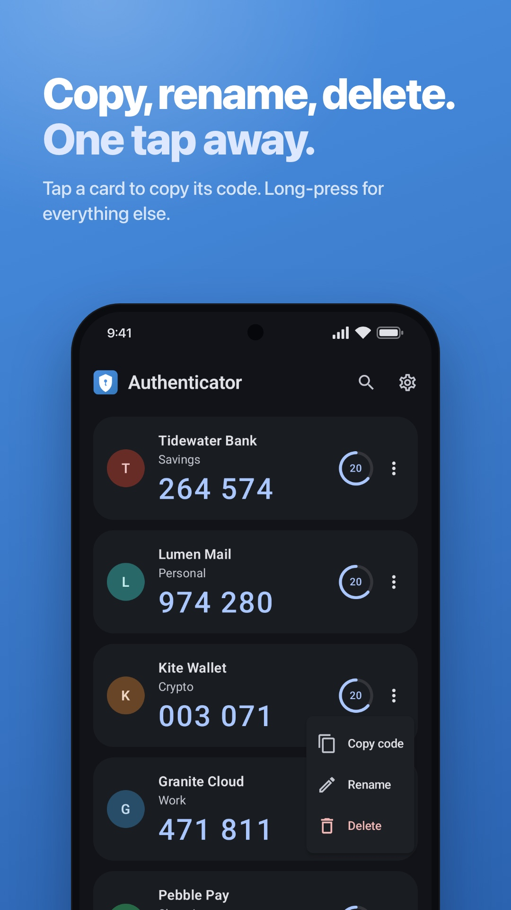

Setting up 2FA
Add a service by scanning its authenticator QR code or entering the setup key it provides.
Open the app. Find your account. Copy your code. A straightforward place for the two-factor codes you use every day, even when you’re offline.

LESS TO THINK ABOUT
Add a service by scanning its authenticator QR code or entering the setup key it provides.
Search your saved accounts and tap to copy a code. The countdown shows how long it has left.
Generate codes without Wi-Fi or mobile data. Signing in to the service itself may still need internet.
THE EVERYDAY DETAILS
The things you need to set up, find and manage your authentication codes.
Scan the setup QR code from a service, or enter its setup key yourself. Review the details before saving.
QR scanning · Manual entrySearch by service or account name. Tap a card to copy the current code, and use its menu to rename or remove an entry.
Search · Copy · OrganizeSetup keys are encrypted with AES-256-GCM using Android Keystore. Generating codes needs no internet connection.
Encrypted secrets · Offline codesScreen security is on by default. Choose light, dark or system appearance, with optional dynamic colors on supported devices.
Screen security · Theme choicesYour secret keys stay in the app’s local storage. There is no cloud recovery: keep the backup codes provided by each service somewhere safe.
FROM THE APP
Setup, appearance and account controls. Tap any image for a closer look.




Screenshots show example accounts. Screen security is enabled by default in the app and can be changed in Settings.
YOUR FIRST ACCOUNT
Authenticator generates codes for services that support TOTP. You enable two-factor authentication in that service’s own security settings first.
Open Google PlayChoose the authenticator-app option in your service’s security settings. Keep the recovery codes it gives you.
Scan the QR code or enter the setup key. Check the account details, then save.
Enter the generated code back into the service to finish setup. On future sign-ins, open Authenticator for a fresh code.
A FEW THINGS TO KNOW
Services that provide a standard time-based authenticator setup (TOTP). It supports SHA-1, SHA-256 and SHA-512, 6- or 8-digit codes, and configurable time periods. Match the settings supplied by your service. HOTP and bulk migration QR codes are not supported.
Yes. Codes are generated on your phone using the saved setup key and the device’s time. Google Play updates and opening web links need a connection. If a code is rejected, check that your phone’s date and time are correct.
The app is free, has no ads and does not require an Authenticator account. You add entries for services where you have already enabled authenticator-based two-factor authentication.
There is no cloud sync or account export. The account database is excluded from Android backup and device transfer in version 1.1.0. Keep each service’s recovery codes safe and arrange access on your new phone before deleting the old entries.
No. It asks Android to block screenshots and hide content in recent apps; it is not a PIN or biometric lock. Keep your phone protected with a screen lock. You can change screen security in Settings.
Your account list and setup keys are not sent to us. QR decoding stays on the device. Copying a code puts it on the Android clipboard. Google Play separately handles update-related information. Read the privacy policy for backup, permissions and deletion details.
AUTHENTICATOR FOR ANDROID
One place to find the code for your next sign-in.